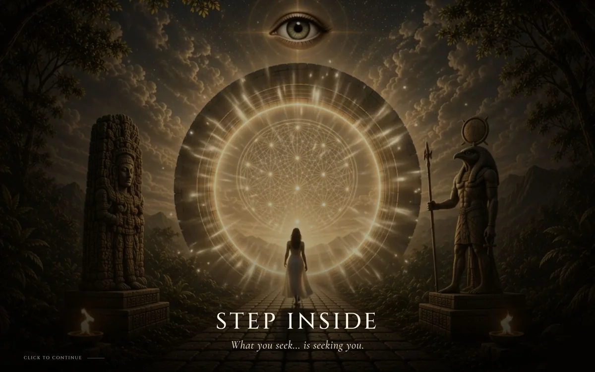
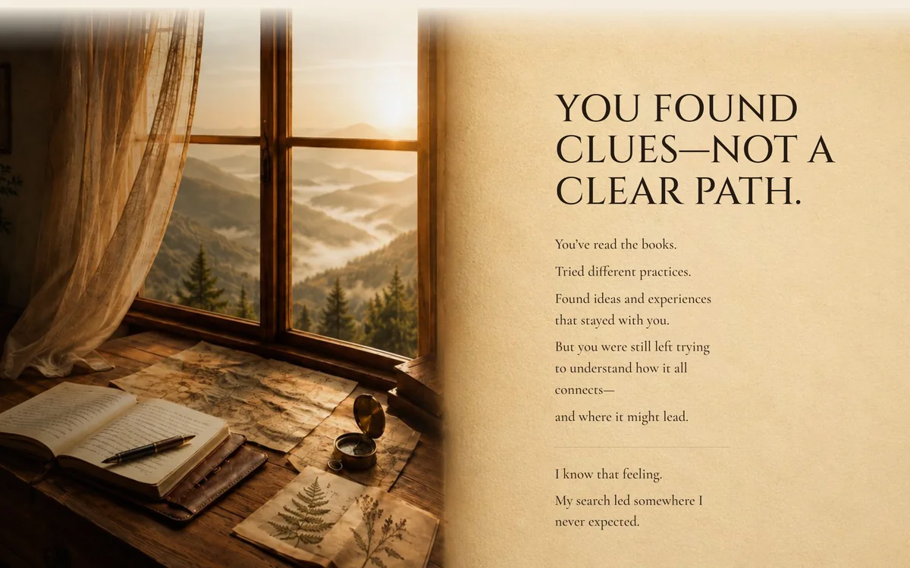

Seek Consciousness

Kurt’s teachings are about the inner journey, so I designed a website that feels like stepping into one: calm, immersive and easy to follow.
How I helped:
- Web design
- Elementor build
- Immersive storytelling
- Content structure
- Responsive design
- Role
- Web designer & developer
- Client
- Kurt
- Market
- United States
- Platform
- WordPress + Elementor
- Website
- seekconsciousness.com ↗
The problem
Deep ideas, many directions
Kurt shares teachings, practices and reflections that grew from his own awakening experience. There’s a lot to explore, and visitors arrive at very different points in their journey.
A standard page of links would feel cold and make the content hard to navigate. The website needed to feel as thoughtful as the ideas inside it.
The goal
What it had to do
- Create a calm, immersive first impression that matches the message.
- Guide each visitor to content that fits where they are.
- Keep long teachings and articles easy to read.

How I worked
Design it like a journey
The homepage opens with a slow, cinematic intro, “Step inside”, that draws visitors in before any text appears. Then it speaks directly to the reader: you’ve spent years searching; you found clues, not a clear path.
From there, I organised everything into three paths (Explorer, Pathfinder and Seeker) so visitors can choose a starting point that fits their experience, with articles grouped by topic.
The build
The decisions that mattered
- 01
A cinematic first impression
A scroll-driven intro with warm, golden imagery sets the tone before a single word is read.
- 02
Three paths, not one menu
Explorer, Pathfinder and Seeker give every visitor a clear place to begin.
- 03
Built to grow
Made in WordPress and Elementor, so Kurt can publish new articles and practices himself.
The result
From concept to Kurt’s live home online
What began as a concept is now Kurt’s live website at seekconsciousness.com: a calm, immersive place for people to begin their inner journey, and a platform he can keep growing.